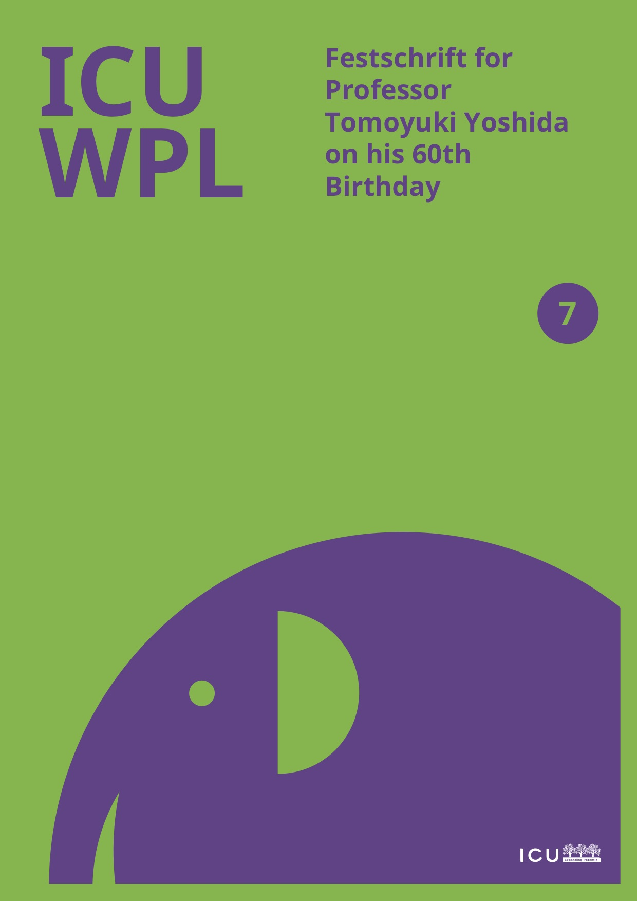
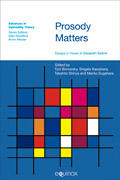
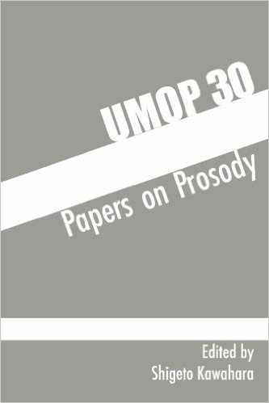
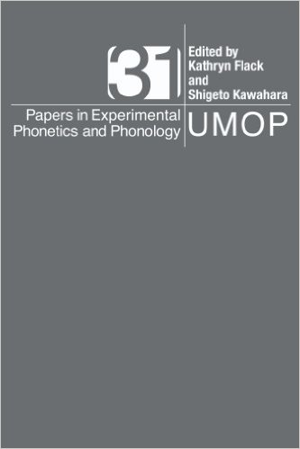

Papers on this page are distributed as a service to the scholarly community to facilitate academic interaction. Please do feel free to email me if you want a copy of unlinked files.
If you think that I publish a lot (and/or feel like you are not publishing as much as you should), check out this article about my rejection history.
Submitted / In Progress
Moon, Changyun, Shigeto Kawahara, Chuyu Huang, Chiyuki Ito and Gakuji Kumagai (2026, submitted) Dissimilation in Korean tensification revisited: Can phonology prohibit three segments?
Kawahara, Shigeto (2026) When AI’s helpfulness becomes harmful: Data reconstruction, simulation and research ethics.
Kawahara, Shigeto (2026) When AI’s helpfulness becomes harmful II: A current AI system recommends cherry-picking and HARKing.
Kawahara, Shigeto (2026) P-hacking with one prompt. Also available on ResearchGate.
Kawahara, Shigeto (2026) Let me find and exclude outliers for you: when an AI system crosses the red line.
Kawahara, Shigeto (2026) Does AI stop optional-stopping?
Kawahara, Shigeto (2026) Do AI systems fill in missing values?—-Testing ethical safeguards against data fabrication
Kawahara, Shigeto (2026) Do Current AI systems can detect ambiguities in a pre-registration but can offer misleading design-specific advice about random-effects structure
Kawahara, Shigeto (2026) Here are some escape hatches for you: How AI helps researchers resist open science
Kawahara, Shigeto (2026) Feed me your manuscript, confidential or not: Current AI systems may not protect the confidentiality of peer review.
Kawahara, Shigeto (2026) LLMs p-hack LMMs.
Kawahara, Shigeto (2026) What you do is first rate: MRI articulation movies made accessible. Manuscript dedicated to John Kingston on the occasion of his retirement.
Kawahara, Shigeto (2024) How Pokémonastics has evolved: Ver 2.1. View a conceptual digram version of the Pokémonastics project (created using Claude.ai).
Slides
Breiss, Canaan, Hironori Katsuda and Shigeto Kawahara (2025) Variation and breakdown in the saltatory interaction of Rendaku and velar nasalization. MFM 2025.
Stern, Michael, Jason Shaw and Shigeto Kawahara (2022) Assessing phonological control of parasagittal tongue shape in Japanese sibilants. Talk given at LSA 2022.
To Appear / In Press
Burroni, Francesco, Lia Saki Bucar Shigemori, Shigeto Kawahara and Jason Shaw (2026, to appear) A gestural account of consonantal length contrasts: Articulatory evidence from Japanese bilabial, alveolar, palatal, and dorsal mimetic geminates. Laboratory Phonology.
Kawahara, Shigeto, Kimi Akita, Zen Nagatsuka and Julian Villegas (2026, in press) Smiles can be conveyed to listeners via speech signals: A case study with Japanese labiodentalization. Linguistics Vanguard.
Breiss, Canaan, Hironori Katsuda and Shigeto Kawahara (2025, to appear) Modeling frequency-conditioned paradigm uniformity in Japanese voiced velar nasalization. Phonology.
2026
Kawahara, Shigeto and Gakuji Kumagai (2026) Sound symbolism can count three segments (whereas phonological constraints presumably cannot). Phonology. 43, e13.
Breiss, Canaan, Hironori Katsuda and Shigeto Kawahara (2026) Token frequency modulates optional paradigm uniformity in Japanese voiced velar nasalization. Phonology 43, e7.
2025
Kawahara, Shigeto (2025) Generative AI and Children: A Blessing or a Poison? [A short English synopsis of the Japanese book on this topic].
Burroni, Francesco, Shigeto Kawahara and Jason Shaw (2025) Articulatory correlates of consonantal length contrasts: the case of Japanese mimetic geminates. JASA-EL 5, 015201, doi: https://doi.org/10.1121/10.0034762.
Akita, Kimi and Shigeto Kawahara (2025) Iconic prosody enhances the depictive power of ideophones. Language and Cognition Volume 17: e77.
2024
Kawahara, Shigeto and Gakuji Kumagai (2024) The (non-)local nature of Lyman's Law revisited. Laboratory Phonology 15(1). dot: https://www.journal-labphon.org/article/id/10808/.
Kawahara, Shigeto and Gakuji Kumagai (2024) Japanese speakers can infer specific sub-lexicons using phonotactic cues. Linguistics Vanguard, https://doi.org/10.1515/lingvan-2024-0097. the published version (Open Access).
Cwiek Aleksandra et al. (5th among 13 authors) (2024) The alveolar trill is perceived as rough by speakers of different languages. Journal of the Acoustical Society of America 156: 3468–3479. PDF.
Kawahara, Shigeto (2024) Review of Emergent Phonology (Diana Archangeli and Douglas Pulleyblank). Phonology. the published version.
2023
Kawahara, Shigeto and Gakuji Kumagai (2023) Rendaku is not blocked by two nasal consonants: A reply to Kim (2022). Glossa 8(1). doi: https://doi.org/10.16995/glossa.9550.
Kawahara, Shigeto and Gakuji Kumagai (2023) Lyman's Law can count only up to two. Laboratory Phonology 14(1). doi: https://doi.org/10.16995/labphon.9335
Shaw, Jason and Shigeto Kawahara (2023) Limits on gestural reorganization following vowel deletion: The case of Tokyo Japanese. Laboratory Phonology 14(1). doi: https://doi.org/10.16995/labphon.8543
Kilpatrick, Alexander, Aleksandra Ćwiek and Shigeto Kawahara (2023) Random forests, sound symbolism and Pokémon evolution. PlosOne 18(1): e0279350.
Kilpatrick, Alexander, Aleksandra Ćwiek, Eleanor Lewis and Shigeto Kawahara (2023) A cross-linguistic, sound symbolic relationship between bilabial consonants, voiced plosives, and Pokémon Friendship. Frontiers in Psychology. doi: doi.org/10.3389/fpsyg.2023.1113143
Kumagai, Gakuji, Naoya Watabe and Shigeto Kawahara (2023) How Russian speakers express evolution in Pokémon names II: The effects of contrastive palatalization and name length. Journal of Phonetic Society of Japan 27(2): 64-72.
Sherwood, Stacey, Jason Shaw, Shigeto Kawahara, Robert Mailhammer and Mark Antoniou (2023) Variation, gender and perception: the social meaning of Japanese linguistic variables. Linguistics 61(4): 959-995.
Villegas, Julian, Kimi Akita and Shigeto Kawahara (2023) Psychoacoustic features explain subjective size and shape ratings of psuedo-words. Forum Acousticum: 10th Convention of the European Acoustics Association.
Erickson, D. et. al. (the 5th among 10 authors) (2023) Cross cultural perception of valence and arousal. Proceedings of ICPhS.
Furusawa, Rina and Shigeto Kawahara (2023) A quantitative exploration of the kobushi technique by Minami Kizuki. ICU Working Papers in Linguistics 24.
2022
Kawahara, Shigeto, Misaki Kato and Kaori Idemaru (2022) Speaking rate normalization across different talkers in the perception of Japanese stop and vowel length contrasts. Journal of the Acoustical Society of America, EL 2, 035204. Link to the article.
Kawahara, Shigeto, Jason Shaw, and Shinichiro Ishihara (2022) Assessing the prosodic licensing of wh-in-situ in Japanese: A computational-experimental approach. Natural Language and Linguistic Theory 40(1): 103-122. ShareIt. the published version.
Ćwiek, Aleksandra et al. (7th among 22 authors) (2022) Bouba and kiki across the globe: Evidence for crossmodal correspondence in speakers of 25 different languages. Royal Society Philosophical Transactions B 377, 1841.
Kumagai, Gakuji and Shigeto Kawahara (2022) How Russian speakers express evolution in Pokémon names: An experimental study with nonce words. Linguistics Vanguard. the published version.
Breiss, Canaan, Hironori and Shigeto Kawahara (2022) A quantitative study of voiced velar nasalization in Japanese. UPenn Working Papers in Linguistics 27: 18-25.
2021
Kawahara, Shigeto (2021) Testing MaxEnt with sound symbolism: A stripy wug-shaped curve in Japanese Pokémon names. Language 97(4): e341-e359. (Research Report). See also its direct source of inspiration.
Ćwiek, Aleksandra et al. (7th among 22 authors) (2021) Novel vocalizations are understood across cultures. Scientific Reports 11: 10108.
Kawahara, Shigeto, Gakuji Kumagai and Mahayana C. Godoy (2021) English speakers can infer Pokémon types using sound symbolism. Frontiers in Psychology 12: 648948.
Kawahara, Shigeto and Canaan Breiss (2021) Exploring the nature of cumulativity in sound symbolism: Experimental studies of Pokémonastics with English speakers. Laboratory Phonology 12(1).
Shaw, Jason and Shigeto Kawahara (2021) More on the articulation of devoiced [u] in Tokyo Japanese: effects of surrounding consonants. Phonetica 78(5/6): 467-513. the published version.
Vance, Timothy, Shigeto Kawahara and Mizuki Miyashita (2021) The diachronic origins on Lyman's Law: Evidence from phonetics, dialectology, and philology. Phonology. 38(3): 479-511.
Godoy, Mahayana C., André Lucas Mendes Gomes, Gakuji Kumagai & Shigeto Kawahara (2021) Sound symbolism in Brazilian Portuguese Pokémon names: Evidence for cross-linguistic similarities and differences. Journal of Portuguese Linguistics 20(1).
Kawahara, Shigeto and Jeff Moore (2021) How to express evolution in English Pokémon names. Linguistics 59(3): 577-607.
Kawahara, Shigeto (2021) Pokémon meets psychology and linguistics: Experimental and theoretical exploration of the bouba-kiki effect. Phonological Studies 24: 77-84.
Kawahara, Shigeto and Gakuji Kumagai (2021) What voiced obstruents symbolically represent in Japanese: Evidence from the Pokémon universe. Journal of Japanese Linguistics 37(1): 3-24. Press release from the publisher.
Kawahara, Shigeto and Yu Tanaka (2021) Partially activated morpheme boundaries in Japanese surnames. Proceedings of NELS 52: 25-38.
Kilpatrick, Alexander, Shigeto Kawahara, Rikke Bundgaard-Nielsen, Brett Baker & Janet Fletcher (2021) Japanese perceptual epenthesis is modulated by transitional probability. Language and Speech 64(1): 203–223.
Lee, Seunghun, Daehan Won, Shigeto Kawahara (2021) COVID-19 Myth Busters in World Languages: A case for broader impacts of linguistic research during the COVID-19 crisis. REPORTS of the Keio Institute of Cultural and Linguistic Studies 52: 1-11.
Breiss, Canaan, Hironori Katsuda and Shigeto Kawahara (2021) Paradigm uniformity is probabilistic: Evidence from velar nasalization in Japanese. Proceedings of WCCFL 39.
Kawahara, Shigeto (2021) Phonetic bases of sound symbolism: A review. Ms.
Isobe, Miwa, Reiko Okabe, Yukino Kobayashi, Shigeto Kawahara, Tomoko Monou, Kazuhiro Abe, Rei Masuda, Saeka Miyahara and Yasuyo Minagawa (2021) Comprehension of Japanese passives: An eye-tracking study with 2-3-year-olds, 6-year-olds and adults. Proceedings of Experimental Psycholinguistics Conference 2019.
Erickson, Donna, Sayoko Takano, Yongwei Li, Jaiyin Gao, Shigeto Kawahara, Kerrie Obert, Kyoko Takahashi and Masato Akagi (2021) Source and filter contributions to voice quality differences. The 12th International Seminar on Speech Production. Proceedings of ISSP 2020.
2020
Kawahara, Shigeto and Seunghun J. Lee (2020) Keio-ICU LINC 2020: Abstract booklet.
Kawahara, Shigeto (2020) A wug-shaped curve in sound symbolism: The case of Japanese Pokémon names. Phonology 37(3):383-418.
Kawahara, Shigeto (2020) Sound symbolism and theoretical phonology. Language and Linguistic Compass 14(8): e12372.
Kawahara, Shigeto (2020) Teaching and learning guide for "Sound symbolism and theoretical phonology". Language and Linguistic Compass 14(8): e12376. Here is the link the published version.
Kawahara, Shigeto (2020) Review of Bodo Winter: Statistics for Linguists: An introduction using R. Phonology 37(3):507-514.
Kawahara, Shigeto, Mahayana C. Godoy and Gakuji Kumagai (2020) Do sibilants fly? Evidence from a sound symbolic pattern in Pokémon names. Open Linguistics 6(1): 386–400.
Uno, Ryoko, Kazuko Shinohara, Yuta Hosokawa, Naho Atsumi, Gakuji Kumagai and Shigeto Kawahara (2020) What’s in a villain’s name? Sound symbolic values of voiced obstruents and bilabial consonants. Review of Cognitive Linguistics.18(2): 428–457.
Godoy, Mahayana C., Neemias Silva de Souza Filho, Juliana G. Marques de Souza, Hális Alves, Shigeto Kawahara (2020) Gotta name'em all: an experimental study on the sound symbolism of Pokémon names in Brazilian Portuguese. Journal of Psycholinguistic Research. 49: 717–740. The link to the published version.
Kawahara, Shigeto, Michinori Suzuki and Gakuji Kumagai (2020) Sound symbolic patterns in Pokémon move names. ICU Working Papers in Linguistics 10. Festschrift for Prof. Junko Hibiya in the occasion of her retirement from ICU: 17-30.
Shinohara Kazuko, Shigeto Kawahara and Hideyuki Tanaka (2020) Visual and proprioceptive perceptions evoke motion-sound symbolism: Different acceleration profiles are associated with different types of consonants. Frontiers in Psychology.
Kunzang Namgyal, George van Driem, Seunghun Julio Lee and Shigeto Kawahara (2020) A phonetic analysis of Drenjongke: A first critical assessment. Indian Linguistics 81(1-2): 1–14.
Kato, Misaki, Shigeto Kawahara and Kaori Idemaru (2020) Speaking rate normalization across different talkers in the perception of Japanese stop and vowel length contrasts. Proceedings of Speech Prosody 2020.
Erickson, Donna, Shigeto Kawahara et al (2020) Cross cultural differences in arousal and valence perceptions of voice quality. Proceedings of Speech Prosody 2020.
Braver, Aaron and Shigeto Kawahara (2020) Acoustics and perception of emphatic lengthening in English. Ms. Texas Tech and Keio.
Kawahara, Shigeto (2020) Cumulative effects in sound symbolism. Ms. Keio.
2019

Hara, Yurie, Shigeto Kawahara and Seunghun Lee (eds.) (2019) ICU Working Papers in Linguistics 7: Festschrift for Professor Tomoyuki Yoshida on his 60th birthday.
Kawahara, Shigeto (2019) What's in a PreCure name? ICU Working Papers in Linguistics 7: Festschrift for Professor Tomoyuki Yoshida on his 60th birthday: 15-22. A simple illustration of the bootstrap analysis
Kawahara, Shigeto and Gakuji Kumagai (2019) Expressing Evolution in Pokémon Names: Experimental Explorations. Journal of Japanese Linguistics 35(1): 3-38.
Kawahara, Shigeto and Gakuji Kumagai (2019) Inferring Pokémon types using sound symbolism: The effects of voicing and labiality. Journal of Phonetic Society of Japan 23(2): 111-116.
Kawahara, Shigeto (2019) Teaching phonetics through sound symbolism. Proceedings of ISAPh.
Kawahara, Shigeto, Hironori Katsuda and Gakuji Kumagai (2019) Accounting for the stochastic nature of sound symbolism using Maximum Entropy model. Open Linguistics 5: 109-120.
Kawahara, Shigeto, Miwa Isobe, Yukino Kobayashi, Tomoko Okabe, Reiko Okabe, and Yasuyo Minagawa (2019) Acquisition of the takete-maluma effect by Japanese speakers. REPORTS of the Keio Institute of Cultural and Linguistic Studies 50: 63-78.
Shaw, Jason and Kawahara, Shigeto (2019) Effects of Surprisal and Entropy on vowel duration in Japanese. Language and Speech. 62(1): 80-114. A link to the published version. Yale Daily News coverage. [xxx This paper was first made available ahead of print in 2017]
Kilpatrick, Alexander, Shigeto Kawahara, Rikke Bundgaard-Nielsen, Brett Baker and Janet Fletcher (2019) Japanese coda [m] elicits both perceptual assimilation and epenthesis. Proceedings of ISAPh.
Lee, Seunghun, Shigeto Kawahara, Céleste Guillemot & Tomoko Monou (2019) Acoustics of the four-way laryngeal contrast in Drenjongke (Bhutia): Observations and implications. Journal of the Phonetic Society of Japan 23(1): 65-75.
Wilson, Ian, Donna Erickson, Shigeto Kawahara, and Tomoko Monou (2019) Acquiring jaw movement patterns in a second language: Some lexical factors. Proceedings of the Annual Meeting of Phonetic Society of Japan.
Shih, Stephanie, Jordan Ackerman, Noah Hermalin, Sharon Inkelas, Hayeun Jang, Jessica Johnson, Darya Kavitskaya, Shigeto Kawahara, Miran Oha, Rebecca L. Starre and Alan Yu (2019, submitted) Cross-linguistic and language-specific sound symbolism: Pokémonastics.
2018
Kawahara, Shigeto, Atsushi Noto, and Gakuji Kumagai (2018) Sound symbolic patterns in Pokémon names. Phonetica 75(3): 219-244. (This paper is Open Access.)
Kawahara, Shigeto, Miwa Isobe, Yukino Kobayashi, Tomoko Monou and Reiko Okabe (2018) Acquisition of sound symbolic values of vowels and voiced obstruents by Japanese children: Using a Pokémonastics paradigm. Journal of the Phonetic Society of Japan 22(2): 122-130.
Shaw, Jason and Shigeto Kawahara (2018) Assessing surface phonological specification through simulation and classification of phonetic trajectories. Phonology 35(3): 481–522. Link to the published version.
Kawahara, Shigeto and Jason Shaw (2018) Persistence of prosody. Bennett, Ryan, Andrew Angeles, Adrian Brasoveanu, Dhyana Buckley, Shigeto Kawahara, Grant McGuire, and Jaye Padgett (eds.) Hana-bana: A Festshrift for Junko Ito and Armin Mester.
Shaw, Jason and Shigeto Kawahara (2018) Consequences of high vowel deletion for syllabification in Japanese. Proceedings of AMP 2017.
Shaw, Jason and Shigeto Kawahara (2018) The lingual gesture of devoiced /u/ in Tokyo Japanese. Journal of Phonetics 66: 100-118.
Shaw, Jason and Shigeto Kawahara (2018)The Role of Predictability in Shaping Human Language Sound Patterns. Linguistics Vanguard, special issue.
Shaw, Jason and Shigeto Kawahara (2018) Predictability and phonology: Past, present and future. Linguistics Vanguard 4(S2): 1-9.
Kawahara, Shigeto and Seunghun Lee (2018) Truncation in Message-Oriented Phonology: A case study using Korean vocative truncation. Linguistics Vanguard 4(S2): 1-8.
Kawahara, Shigeto (2018) Phonology and orthography: The orthographic basis of rendaku and Lyman’s Law. Glossa 3(1). PDF.
 Bennett, Ryan, Andrew Angeles, Adrian Brasoveanu, Dhyana Buckley, Shigeto Kawahara, Grant McGuire, and Jaye Padgett (2018) Hana-bana: A festschrift for Junko Ito and Armin Mester.
Bennett, Ryan, Andrew Angeles, Adrian Brasoveanu, Dhyana Buckley, Shigeto Kawahara, Grant McGuire, and Jaye Padgett (2018) Hana-bana: A festschrift for Junko Ito and Armin Mester.
Hall, Erin, Peter Jurgec, and Shigeto Kawahara (2018) Opaque allomorph selection in Japanese and Harmonic Serialism: A reply to Kurisu (2012). Linguistic Inquiry 49(3): 599-610.
Lee, Seunghun, Hyun Kyung Hwang, Tomoko Monou, and Shigeto Kawahara (2018) The phonetic realization of tonal contrast in Dränjongke. Proceedings of TAL 2018: 217-221.
Lee, Seunghun and Shigeto Kawahara (2018) The phonetic structure of Dzongkha: A preliminary study. Journal of the Phonetic Society of Japan 22(1): 13-20.
Funakoshi, Kenshi, Shigeto Kawahara and Christopher Tancredi (eds.) (2018) Japanese Korean Linguistics 24. Stanford: CSLI.
Kumagai, Gakuji and Shigeto Kawahara (2018) Stochastic phonological knowledge and word formation in Japanese. Journal of the Linguistic Society of Japan 153: 57-83.
Kawahara, Shigeto (2018) Durational vowel-coda interaction in spontaneous Japanese utterances. Acoustical Science and Technology 39(2): 138-139.
Moore, Jeff, Jason Shaw, Shigeto Kawahara, & Takayuki Arai (2018) Articulation strategies for English liquids used by Japanese speakers. Acoustic Science and Technology 39(2): 75-83.
Perkins, Jeremy, Seunghun Lee, Shigeto Kawahara and Tomoko Monou (2018) Consonants and tones: A view from two Tibeto-Burman languages. 日本言語学会第155回全国大会予稿集.
Kilpatrick Alexander, Shigeto Kawahara, Rikke L. Bundgaard-Nielsen, Brett J. Baker and Janet Fletcher1 (2018) Japanese vowel devoicing modulates perceptual epenthesis. Proceedings of SST 2018.
2017
Kawahara, Shigeto (2017) Durational compensation within a CV mora in spontaneous Japanese: Evidence from the Corpus of Spontaneous Japanese. Journal of the Acoustical Society of America 142: EL143. A link to the published article
Erickson, Donna and Shigeto Kawahara (2017) In Memoriam: Osamu Fujimura. Phonetica. 74(4): I-IV.
Kawahara, Shigeto and Melanie Pangilinan (2017) Spectral continuity, amplitude changes, and perception of length contrasts. In H. Kubozono (ed.) Aspects of Geminate Consonants. Oxford: Oxford University Press. pp. 13-33.
Kawahara, Shigeto & Michinao F. Matsui (2017) Some aspects of Japanese consonant articulation: A preliminary EPG study. ICU Working Papers in Linguistics II: 9-20.
Matsui, Mayuki, Yosuke Igarashi, and Shigeto Kawahara (2017) Acoustic manifestation of Russian word-final devoicing in utterance-medial position. Journal of the Phonetic Society of Japan 21(2): 1-17.
Erickson, Donna, Kiyoshi Honda and Shigeto Kawahara (2017) Interaction of jaw displacement and F0 peak in syllables produced with contrastive emphasis. Acoustical Science and Technology 38(3): 137-146.
Kawahara, Shigeto, Donna Erickson, and Atsuo Suemitsu (2017) The phonetics of jaw displacement in Japanese vowels. Acoustical Science and Technology 38(2): 99-107.
Kawahara, Shigeto (2017) A bootstrap-based reanalysis of Zamma (2013). The R-code for bootstrapping. My humble obituary. REPORTS of the Keio Institute of Cultural and Linguistic Studies 48: 221-225.
Matsui, Michinao (2017) (Translated by Shigeto Kawahara). On the input information of the C/D model for vowel devoicing in Japanese. Journal of the Phonetic Society of Japan 21(1): 129-140.
Lee, Seunghun, Shigeto Kawahara, Haruka Tada and Hanna Kaji (2017) A preliminary acoustic study of tone in Dzongkha. 音声学会第31回全国大会予稿集. pp. 114-119.
Lee, Seunghun, Shigeto Kawahara, Hanna Kaji and Haruka Tada (2017) The acoustic manifestation of laryngeal contrasts in Dzongkha: A preliminary study. Proceedings of SICSS 2017.
Kawahara, Shigeto (2017) Opacity in Japanese. Ms. Keio.
2016
Kawahara, Shigeto (2016) Japanese has syllables: A reply to Labrune (2012). Phonology 33(1): 169–194.
The link to the CUP site
The link to the CUP site
Erickson, Donna, Chunyue Zhu, Shigeto Kawahara, and Atsuo Suemitsu (2016) Articulation, acoustics and perception of Mandarin Chinese emotional speech. Open Linguistics 2: 620–635.
Kawahara, Shigeto (2016) Japanese geminate devoicing once again: Insights from Information Theory. Proceedings of Formal Approaches to Japanese Linguistics 8: 43-62.
Shinohara, Kazuko, Naoto Yamauchi, Shigeto Kawahara, and Hideyuki Tanaka (2016) Takete and maluma in action: A cross-modal relationship between gestures and sounds. PLOS ONE. Go to the publication page.
Kawahara, Shigeto (2016) The prosodic features of “tsun” and “moe” voices. Journal of the Phonetic Society of Japan 20(2): 102-110.
Kawahara, Shigeto (2016) Psycholinguistic methodology in phonological research (pre-print version). Oxford Bibliography Online. For discussion on Japanese verbal paradigms, which I removed as per reviewer’s request, click here.The published version is available from here.
Erickson, Donna and Shigeto Kawahara (2016) Articulatory correlates of metrical structure: Studying jaw displacement patterns. Linguistics Vanguard 2: 103-118.
Kawahara, Shigeto and Shin-ichiro Sano (2016) /p/-driven geminate devoicing in Japanese: Corpus and experimental evidence. Journal of Japanese Linguistics 32: 57-77.
Takahashi, Chika and Shigeto Kawahara (2016) Can Japanese speakers compensate for coaritulation due to [l] and [r]? Formal Approaches to Japanese Linguistics 8, Mie University.
Kawahara, Shigeto (2016) Subsyllabic structures in Japanese child phonology: A preliminary study. In Phonological Society of Japan (ed.) Phonological Studies 19. Tokyo: Kaitakusha. pp.19-26. [This is a heavily re-written version of my 2005 term paper.]
Monou, Tomoko and Shigeto Kawahara (2016) The role of the Subset Principle in L2 acquisition: A case study of Japanese and Mandarin Chinese. REPORTS of the Keio Institute of Cultural and Linguistic Studies 47: 113-141.
Shinohara, Kazuko and Kawahara, Shigeto (2016) A cross-linguistic study of sound symbolism: The images of size. The proceedings of BLS 36: 396-410. Berkeley Linguistic Society: Berkeley.
Braver, Aaron and Shigeto, Kawahara (2016) Incomplete neutralization in Japanese monomoraic lengthening. Proceedings of Phonology 2014. Online publication.
Braver, Aaron, Natalie Dresher and Shigeto, Kawahara (2016) The phonetics of emphatic vowel lengthening in English. Proceedings of Phonology 2014. Online publication.
Kawahara, Shigeto (2016) Psycholinguistic studies of rendaku. In Timothy Vance and Mark Irwin (eds.) Sequential voicing in Japanese compounds: Papers from the NINJAL Rendaku Project. Amsterdam: John Benjamins. pp. 35-46. Get the flier of this book here
Kawahara, Shigeto and Hideki Zamma (2016) Generative treatments of rendaku. In Timothy Vance and Mark Irwin (eds.) Sequential voicing in Japanese compounds: Papers from the NINJAL Rendaku Project. Amsterdam: John Benjamins. pp.13-34.
Kawahara, Shigeto and Shin-ichiro Sano (2016) Rendaku and identity avoidance: Consonantal identity and moraic identity. In Timothy Vance and Mark Irwin (eds.) Sequential voicing in Japanese compounds: Papers from the NINJAL Rendaku Project. Amsterdam: John Benjamins. pp.47-55.
Shigeto Kawahara (2016) The phonetics of [voice] in singletons and geminates in Japanese: An acoustic and electroglottography study. Ms.
2015
Kawahara, Shigeto (2015) Japanese /r/ is not featureless: A rejoinder to Labrune (2014) Open Linguistics 1: 432-443.
Kawahara, Shigeto (2015) The phonetics of geminates: An overview. “Geminate consonants across the world”, A satellite workshop for ICPhS 2015.
Kawahara, Shigeto (2015) Geminate devoicing in Japanese loanwords: Theoretical and experimental investigations. Language and Linguistic Compass 9(4): 168–182.
Kawahara, Shigeto (2015) Can we use rendaku for phonological argumentation? Linguistics Vanguard 1: 3-14. Go to theirwebsite.
Kawahara, Shigeto (2015) Comparing a forced-choice wug test and a naturalness rating test: An exploration using rendaku. Language Sciences 48: 42-47.
Kawahara, Shigeto (2015) Papers on geminate devoicing in Japanese. A collection of papers that I wrote about geminate devoicing in the past 10 years. (The last paper is to appear in Journal of Japanese Linguistics. See above for the revised version.)
Kawahara, Shigeto (2015) The phonetics of sokuon, obstruent geminates. In Haruo Kubozono (ed.) The Handbook of Japanese Language and Linguistics: Phonetics and Phonology. Mouton. pp. 43-73.
Kawahara, Shigeto (2015) The phonology of Japanese accent. In Haruo Kubozono (ed.) The Handbook of Japanese Language and Linguistics: Phonetics and Phonology. Mouton. pp.445-492.
Braver, Aaron and Shigeto, Kawahara (2015) Incomplete neutralization via paradigm uniformity and weighted constraints. Proceedings of North Eastern Linguistics Society 45. GLSA. pp.115-124.
Kawahara, Shigeto, Donna Erickson, and Atsuo Suemitsu (2015) Edge prominence and declination in Japanese jaw displacement patterns: A view from the C/D model. A special issue on the C/D model, Journal of the Phonetic Society of Japan 19(2): 33-43.
Kawahara, Shigeto (2015) The C/D model as a theory of the phonetics-phonology interface. A special issue on the C/D model, Journal of the Phonetic Society of Japan 19(2): 9-15.
Erickson, Donna and Shigeto Kawahara (2015) A practical guide to calculating syllable prominence, timing and boundaries in the C/D model.. A special issue on the C/D model, Journal of the Phonetic Society of Japan 19(2): 16-21.
Fukazawa Haruka, Shigeto Kawahara, Mafuyu Kitahara and Shin-ichiro Sano (2015) Two is too much: Geminate devoicing in Japanese. In Phonological Society of Japan (ed.) Phonological Studies 18. Tokyo: Kaitakusha. pp.3-10.
Kawahara, Shigeto (2015) A catalogue of phonological opacity in Japanese. REPORTS of the Keio Institute of Cultural and Linguistic Studies 46: 145-174.
Kawahara, Shigeto, Kazuko Shinohara and Joseph Grady (2015) Iconic inferences about personality: From sounds and shapes. In Masako K. Hiraga, William J. Herlofsky, Kazuko Shinohara and Kimi Akita (eds.) Iconicity: East meets west. John Benjamins: Amsterdam. pp. 57-69.
Erickson, Donna, Jangwon Kim, Shigeto Kawahara, Caroline Menezez, Atsuo Suemitsu, Jeff Moore (2015) Bridging articulation and perception: The C/D model and contrastive emphasis. Proceedings of ICPhS 2015.
2014
Kawahara, Shigeto and Mika Igarashi (2014) Proceedings of FAJL 7. MITWPL. Front Matters. Buy a copy.
Kawahara, Shigeto and Aaron Braver (2014) Durational properties of emphatically-lengthened consonants in Japanese. Journal of International Phonetic Association 44(3): 237-260. A link to the CUP page.
Kawahara, Shigeto and Kelly Garvey (2014) Nasal place assimilation and the perceptibility of place contrasts. Open Linguistics 1: 17-36.
Kawahara, Shigeto and Shin-ichiro Sano (2014) Identity Avoidance and Lyman's Law. Lingua 150: 71-77.
Hara, Yurie, Kawahara, Shigeto, and Yuli Feng (2014) The prosody of enhanced bias in Mandarin and Japanese negative questions. Lingua 150: 92-116.
Lee Sang-Im, Kawahara, Shigeto and Seunghun J. Lee (2014) The “whistled” fricative in Xitsonga: its articulation and acoustics. Phonetica 71(1): 51-80.
John Kingston, Kawahara, Shigeto, Della Chambless, Michael Key, Daniel Mash, and Sarah Watsky (2014) Context effect as auditory contrast. Attention, Perception, & Psychophysics 76(5): 1437-1464.
Syrett, Kristen and Kawahara, Shigeto (2014) Production and perception of listener-oriented clear speech in child language. Journal of Child Language 41: 1373 - 1389.
Kawahara, Shigeto and Shin-ichiro Sano (2014) Testing Rosen's Rule and Strong Lyman's Law. NINJAL Research Papers 7: 111-120.
Kawahara, Shigeto and Shin-ichiro Sano (2014) Identity avoidance and rendaku. Proceedings of Phonology 2013. Online publication.
Braver, Aaron and Kawahara, Shigeto (2014) Incomplete vowel lengthening in Japanese: A first study. Proceedings of the 31st meeting of West Coast Conference on Formal Linguistics. pp.86-95. Sommerville: Cascadilla Press.
Kawahara, Shigeto, Donna Erickson, Jeff Moore, Atsuo Suemitsu and Yoshiho Shibuya (2014) Jaw displacement and metrical structure in Japanese: The effect of pitch accent, foot structure, phrasal stress. Journal of the Phonetic Society of Japan 18(2): 77-87.
Kawahara, Shigeto, Hinako Masuda, Donna Erickson, Jeff Moore, Atsuo Suemitsu and Yoshiho Shibuya (2014) Quantifying the effects of vowel quality and preceding consonants on jaw displacement: Japanese data. Journal of the Phonetic Society of Japan 18(2): 54-62.
Erickson, Donna, Kawahara, Shigeto, J, Atsuo Suemitsu, Yoshiho Shibuya, and Mark Tiede (2014) Comparison of jaw displacement patterns of Japanese and American speakers of English: A preliminary report. Journal of the Phonetic Society of Japan 18(2): 88-94.
Erickson, Donna, Kawahara, Shigeto, Jeff Moore, Atsuo Suemitsu, and Yoshiho Shibuya (2014) Metrical structure and jaw displacement: An exploration. Proceedings of Speech and Prosody 2014: 300-303.
Erickson, Donna, Kawahara, Shigeto, Jeff Moore, Caroline Menezes, Atsuo Suemitsu, Jangwon Kim and Yoshiho Shibuya (2014) Calculating articulatory syllable duration and phrase boundaries. Proceedings of The 10th International Seminar on Speech Production (ISSP): 102-105.
Takemura, Akiko, Itsue Kawagoe and Shigeto Kawahara (2014) The perception of gemination in English word-internal clusters by Japanese listeners: A case for phonetically-driven loanword adaptation. Proceedings of FAJL 7. MITWPL. pp. 227-237.
2013
Kawahara, Shigeto and Shin-ichiroo Sano (2013) A corpus-based study of geminate devoicing in Japanese: Linguistic factors. Language Sciences 40: 300-307.
Sano, Shin-ichiroo and Kawahara, Shigeto (2013) A corpus-based study of geminate devoicing in Japanese: The role of the OCP and external factors. Journal of Linguistic Society of Japan (Gengo Kenkyuu). 144:103-118
Kawahara, Shigeto (2013) Testing Japanese loanword devoicing: Addressing task effects. Linguistics 51(6): 1271 – 1299.
Kawahara, Shigeto (2013) Emphatic gemination in Japanese mimetic words: A wug-test with auditory stimuli. Language Sciences 40: 24-35.
Coetzee, Andries and Kawahara, Shigeto (2013) Frequency biases in phonological variation. Natural Language and Linguistic Theory. 31(1): 47-89.
Kawahara, Shigeto and Aaron Braver (2013) The phonetics of emphatic vowel lengthening in Japanese. Open Journal of Modern Linguistics 3(2): 141-148. Open Access version.
Shinohara, Kazuko and Kawahara, Shigeto (2013) The sound symbolic nature of Japanese maid names. The proceedings of JCLA 13. Japan Cognitive Linguistics Association. pp. 183-193.
Kawahara, Shigeto (2013) The phonetics of Japanese maid voice I: A preliminary study. 音韻研究 (Phonological Studies) 16: 19-28.
Monou, Tomoko and Kawahara, Shigeto (2013) The emergence of the unmarked in L2 acquisition: interpreting null subjects. Proceedings of the Tokyo Conference on Psycholinguistics (TCP) 14. pp.181-200. Tokyo: Hitsuji Shobo.
Deprez, Viviane, Kristen Syrett, and Kawahara, Shigeto (2013) The interaction of syntax, prosody, and discourse in licensing French wh-in-situ questions. Lingua 124: 4-19.
2012
Kawahara, Shigeto (2012) Lyman's Law is active in loanwords and nonce words: Evidence from naturalness judgment studies. Lingua 122(11): 1193-1206.
Kawahara, Shigeto and Sophia Kao (2012) The productivity of a root-initial accenting suffix, [-zu]: Judgment studies. Natural Language and Linguistic Theory. 30(3): 837-857.
Kawahara, Shigeto (2012) Review of The Phonology of Japanese (by Laurence Labrune, 2012 Oxford University Press). Phonology . 29(3): 540-548. Get the PDF file.
Kawahara, Shigeto and Kazuko Shinohara (2012) A tripartite trans-modal relationship among sounds, shapes and emotions: A case of abrupt modulation. In. N. Miyake, D. Peebles and R. P. Cooper (eds.) The Proceedings of the 34th Annual Meeting of the Cognitive Science Society. Austin: Cognitive Science Society. pp. 569-574. (There were some mistakes in the published version, which you can download from here)
Kawahara, Shigeto (2012) Acoustic bases of sound symbolism. Talk presented at Seoul National University.
Kawahara, Shigeto (2012) Amplitude changes facilitate categorization and discrimination of length contrasts. IEICE Technical Report. THE INSTITUTE OF ELECTRONICS, INFORMATION AND COMMUNICATION ENGINEERS 112: 67-72.
Deprez, Viviane, Kristen Syrett, and Kawahara, Shigeto (2012) Interfacing information and prosody: French wh-in-situ questions. In I. France, S. Lusini and A. Saab. Romance Languages and Linguistic Theory 2010. John Benjamins: Amsterdam. pp. 135–154.
Hara, Yurie and Kawahara, Shigeto (2012) The prosody of public evidence in Japanese: A rating study. Proceedings of the 29th meeting of West Coast Conference on Formal Linguistics. pp.353-361. Sommerville: Cascadilla Press.

Borowsky, Toni, Kawahara, Shigeto, Takahito Shinya, and Mariko Sugahara (eds.) (2012) Prosody Matters: Essays in honor of Elisabeth Selkirk. Equinox Publishing. London. The flier.
Review by S. Frota and M. Vigário (2013), Phonology 30. A CUP link to the article.
Review by M. Kitahara (2015), Studies in English Literature 56, pp.211-218.
Review by A. Hosseini (2014), English Linguistics.
Review by M. Kitahara (2015), Studies in English Literature 56, pp.211-218.
Review by A. Hosseini (2014), English Linguistics.
Kawahara, Shigeto (2012) The intonation of nominal parentheticals in Japanese. In T. Borowsky, S. Kawahara, T. Shinya and M. Sugahara (eds.) Prosody Matters. Equinox: London. pp. 304-340.
Gallagher, Gillian, Peter Graff, Kawahara, Shigeto, and Michael Kenstowicz (eds.) (2012) Phonological Similarity: Perceptual and Articulatory Bases and Links to Grammatical Mechanisms. A special volume of Lingua 122(2).
Braver, Aaron and Shigeto, Kawahara (2012) Complete and incomplete neutralization in Japanese monomoraic lengthening. Ms., Rutgers University.
2011
Kingston, John, Kawahara, Shigeto, Daniel Mash and Della Chambless (2011) Auditory contrast versus compensation for coarticulation: Data from Japanese and English listeners. Language and Speech. 54(4): 496-522.
Kawahara, Shigeto (2011) Japanese loanword devoicing revisited: A rating study. Natural Language and Linguistic Theory. 29(3): 705-723.
Kawahara, Shigeto (2011) Aspects of Japanese loanword devoicing. Journal of East Asian Linguistics 20(2): 169–194.
Kawahara, Shigeto (2011) Experimental approaches in theoretical phonology. In M. van Oostendorp, C. Ewen, E. Hume, and K.Rice (eds.) The Blackwell Companion to Phonology. Wiley-Blackwell. pp. 2283-2303.
Kawahara, Shigeto and Kazuko Shinohara (2011) Phonetic and psycholinguistic prominences in pun formation: Experimental evidence for positional faithfulness. In M. den Dikken and W. McClure (eds.) Japanese/Korean Linguistics 18. Stanford: CSLI. pp.177-188.
Hara, Yurie, Kawahara, Shigeto, and Yuli Feng (2011) Emphatic stress as epistemic conflict: A case study of Mandarin Chinese. Proceedings of Logic and Engineering of Natural Language Semantics 8: 13-26.
Kawahara, Shigeto (2011) Modes of phonological judgment. Ms., Rutgers University.
2010
Kawahara, Shigeto (2010) Papers on Japanese imperfect puns. A collection of papers on imperfect puns
Kawahara, Shigeto and Kazuko Shinohara (2010) Calculating vocalic similarity through puns. Journal of the Phonetic Society of Japan 13(3): 101-110.
Kawahara, Shigeto and Matt Wolf (2010) On the existence of root-initial-accenting suffixes: An elicitation study of Japanese [-zu]. Linguistics 48(4): 837-864. Eratta
Shinohara, Kazuko and Kawahara, Shigeto (2010) Syllable intrusion in Japanese puns, dajare. Proceeding of the 10th meeting of Japan Cognitive Linguistics Association. pp. 313-322.
Kawahara, Shigeto and Kelly Garvey (2010) Testing the p-map hypothesis: Coda devoicing. Ms. Rutgers University.
2009
Kingston, John, Kawahara, Shigeto, Della Chambless, Daniel Mash and Eve Brenner-Alsop (2009) Contextual effects on the perception of duration. Journal of Phonetics. 37.3: 297-320.
Kawahara, Shigeto (2009) Faithfulness, correspondence, perceptual similarity: Hypotheses and experiments. Journal of the Phonetic Society of Japan. 13.2: 52-61.
Kawahara, Shigeto and Kazuko Shinohara (2009) The role of psychoacoustic similarity in Japanese puns: A corpus study. Journal of Linguistics. 45.1: 111-138.
Kawahara, Shigeto (2009) Probing knowledge of similarity through puns. In Takahito Shinya (ed.) Proceedings of Sophia University Linguistic Society 23. Tokyo: Sophia University Linguistics Society. pp.110-137. Errata
2008
Kawahara, Shigeto and Takahito Shinya (2008) The intonation of gapping and coordination in Japanese: Evidence for Intonational Phrase and Utterance. Phonetica 65.1-2: 62-105.
Kawahara, Shigeto (2008) Phonetic naturalness and unnaturalness in Japanese loanword phonology. Journal of East Asian Linguistics (JEAL) 17.4: 317-330.
Hara Yurie and Kawahara, Shigeto (2008) Deaccenting, MAXIMIZE PRESUPPOSITION, and evidential scale . In Proceedings of the fourth international conference on speech prosody.
Kawahara, Shigeto (2008) On the proper treatment of non-crisp-edges. In M. Endo, S. Jun, P. Sells, P.M. Clancy, S. Iwasaki, and S-O. Sohn (eds.) Japanese/Korean Linguistics 13. Stanford: CSLI Publications. pp. 55-67. [xxx this paper is old, originally presented in 2003.]
Kawahara, Shigeto, Kazuko Shinohara and Yumi Uchimoto (2008) A positional effect in sound symbolism: An experimental study. Proceedings of the 8th meeting of Japan Cognitive Linguistics Association. [xxx this paper is based on the BA thesis of the third author.]
Kawahara, Shigeto and Kazuko Shinohara (2008) A cross-linguistic study of sound symbolism: the case of voicing. A poster presented at Language, Communication, and Cognition. Brighton University.
2007
Kawahara, Shigeto (2007) Half rhymes in Japanese rap lyrics and knowledge of similarity. Journal of East Asian Linguistics (JEAL) 16.2: 113-144. Eratta.
Gelbart, Ben and Kawahara, Shigeto (2007) Lexical cues to foreignness in Japanese. In Proceedings of Formal Approaches to Japanese Linguistics 4: 49-60. MIT Working Papers in Linguistics. Cambridge: MITWPL.
Kawahara, Shigeto (2007) Copying and spreading in phonological theory: Evidence from echo epenthesis. In University of Massachusetts Occasional Papers in Linguistics 32: Papers in Optimality III. 111-143. Amherst: GLSA.
Kawahara, Shigeto (2007) Sonorancy and geminacy . In University of Massachusetts Occasional Papers in Linguistics 32: Papaers in Optimality III. 145-186. Amherst: GLSA [This paper has been superseded by Kawahara, Pangilinan, and Garvey (2011) above.].
2006
Kawahara, Shigeto (2006) A faithfulness ranking projected from a perceptibility scale: The case of [+voice] in Japanese. Language 82.3: 536-574.
Kawahara, Shigeto (2006) Mimetic gemination in Japanese: A challenge for Evolutionary Phonology. Theoretical Linguistics 32.3: 411-424.
Kawahara, Shigeto, Hajime Ono, and Kiyoshi Sudo (2006) Consonant co-occurrence restrictions in Yamato Japanese. Japanese/Korean Linguistics 14: 27-38. Stanford: CSLI Publications. Further info
2005


Kawahara, Shigeto (2005) Voicing and geminacy in Japanese: An acoustic and perceptual study. In K. Flack and S. Kawahara (eds.) University of Massachusetts Occasional Papers in Linguistics 31: Papers in Experimental Phonetics and Phonology. pp. 87-120.
Potts, Christopher, and Kawahara, Shigeto (2005) Japanese honorifics as emotive definite descriptions. Proceedings of SALT 14: 253-270.
Kawahara, Shigeto and Kathryn Flack (eds.) (2005) University of Massachusetts Occasional Papers in Linguistics 31: Papers in Experimental Phonetics and Phonology. ISBN: 1-4196-0681-6. TOC
Kawahara, Shigeto (ed.) (2005) University of Massachusetts Occasional Papers in Linguistics 30: Papers on Prosody. ISBN: 1-4196-0680-8.
2004
Kawahara, Shigeto (2004) Locality in echo epenthesis: Comparison with reduplication. Proceedings of the North East Linguistics Society 34: 295-309.
Shinya, Takahito, Elisabeth Selkirk and Kawahara, Shigeto (2004) Rhythmic boost and recursive minor phrase in Japanese. In Proceedings of the second international conference on speech prosody. 183-186.
Selkirk, Elisabeth, Takahito Shinya, and Kawahara, Shigeto (2004) Phonological and phonetic effects of minor phrase length on f0 in Japanese. In Proceedings of the second international conference on speech prosody. 345-348.
2003
Kawahara, Shigeto (2003) On a certain kind of hiatus resolution in Japanese. Onin Kenkyuu [Phonological Studies] 6: 11-20. (Edited by Phonological Soceity of Japan. Tokyo: Kaitakusha.)
Kawahara, Shigeto, Kohei Nishimura, and Hajime Ono (2003) Unveiling the unmarkedness of Sino-Japanese. In Japanese/Korean Linguistics 12: 140-151. Stanford: CSLI.
Kawahara, Shigeto, Makoto Kadowaki and Kazuko Yatsushiro (2003) A gap in the interpretation of embedded tense in Japanese. In Snippets 7: 11-12.
Kadowaki, Makoto and Kawahara, Shigeto (eds.) (2003) Proceedings of NELS 33. ISBN: 1-4196-2201-3.
2002
Kawahara, Shigeto (2002) Similarity among Variants: Output-Variant Correspondence. BA Thesis: International Christian University.
Kawahara, Shigeto (2002) Faithfulness among variants. In On-in-kenkyuu [Phonological Studies] 5: 47-54. (Edited by Phonological Society of Japan. Tokyo: Kaitakusha.) [A short summary of my BA thesis above]
Kawahara, Shigeto (2002) Aspects of Japanese hip-hop rhymes: What they reveal about the structure of Japanese. In Proceedings of Language Study Workshop.
Kaneko, Ikuyo and Kawahara, Shigeto (2002) Positional faithfulness theory and the emergence of the unmarked: The case of Kagoshima Japanese. In Akira Nakayama (ed.) ICU English Studies 11: 18-36.